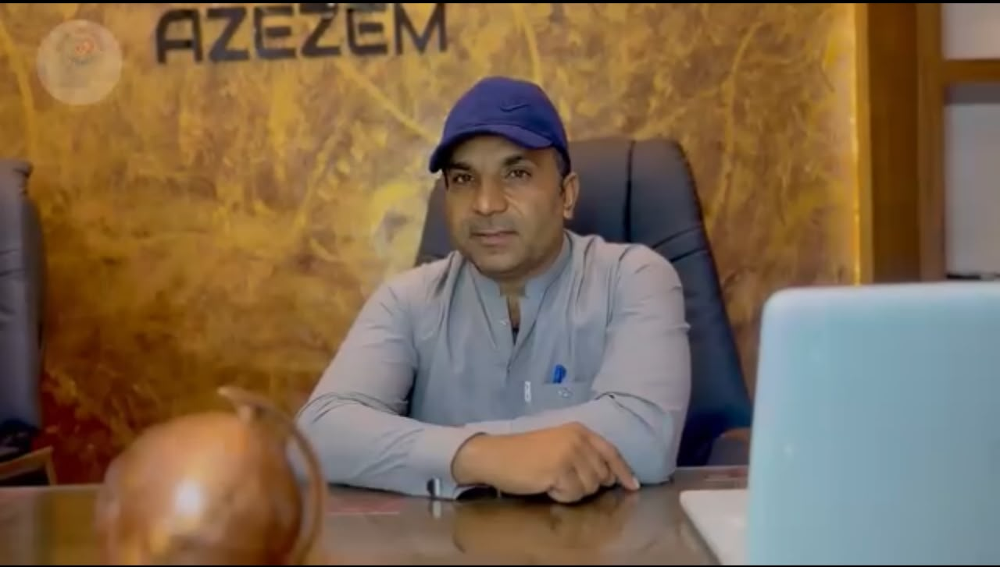
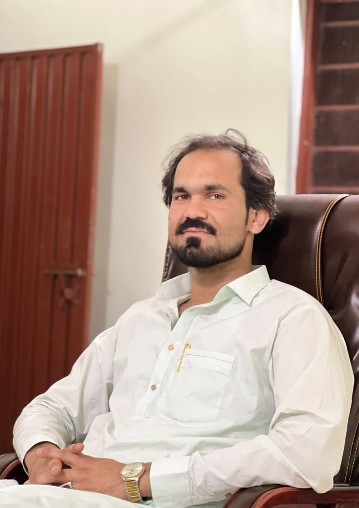

QANDEEL
THALASSEMIA CARE CENTER
Saving Lives Through Blood Donation & CareTHALASSEMIA CARE CENTER
Saving Lives Through Blood Donation & CareQandeel Thalassemia Care Center Panjgur is a dedicated non-profit organization working for the care, treatment, awareness, and prevention of Thalassemia. Our mission is to improve the lives of children and families affected by Thalassemia through medical support, counseling, awareness campaigns, and community participation.
To provide quality treatment, patient care, counseling, and support services for Thalassemia patients and their families.
To create a healthier future where every Thalassemia patient receives timely treatment and lives a better quality of life.
We connect donors, volunteers, healthcare professionals, and families to support children affected by Thalassemia.
Guided by compassion and community service, our leadership team works to bring hope, treatment, and support to Thalassemia patients.

Founder of Qandeel Thalassemia Care Center, dedicated to helping Thalassemia patients through blood donation drives, treatment support, awareness programs, and community service.
📞 03333002324
📘 Facebook: Engr Khuda Nazar

Co-Founder of Qandeel Thalassemia Care Center, working to improve patient support, awareness campaigns, volunteer engagement, and community outreach programs.
📞 03355778020
📘 Facebook: Nadeem Baloch
📸 Instagram: nadeem_baloch24
Total Registered Patients
Successfully Treated Patients
Recovered / Improved Children
Patients Waiting For Treatment
Dr. M. Tariq Masood
Dr. Younas Jamal
Rs. 20,000 – 25,000 per patient
Karachi & Peshawar Specialized Treatment Programs
Regular medical checkups, treatment monitoring, and medication support.
Community outreach programs and awareness sessions about Thalassemia.
Guidance and counseling services for patients and their families.